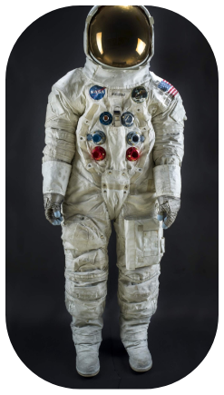

Neil Armstrong's Apollo 11 Spacesuit
This spacesuit was worn by astronaut Neil Armstrong, Commander of the Apollo 11 mission, which landed the first man on the Moon on July 20, 1969. It was conserved thanks to a successful Kickstarter campaign in 2015 to conserve, digitize and display the suit in time for the 50th anniversary of the first Moon landing.
Created:2018
Photographer: Jim Preston
ID #: NASM2018-02096
Source:Smithsonian's National Air and Space Museum
Copyright/Owner:Smithsonian Institution
Rights Usage:Contact Smithsonian Institution
Terms of Use: Smithsonian terms of Use for print or commercial use please see permissions information.